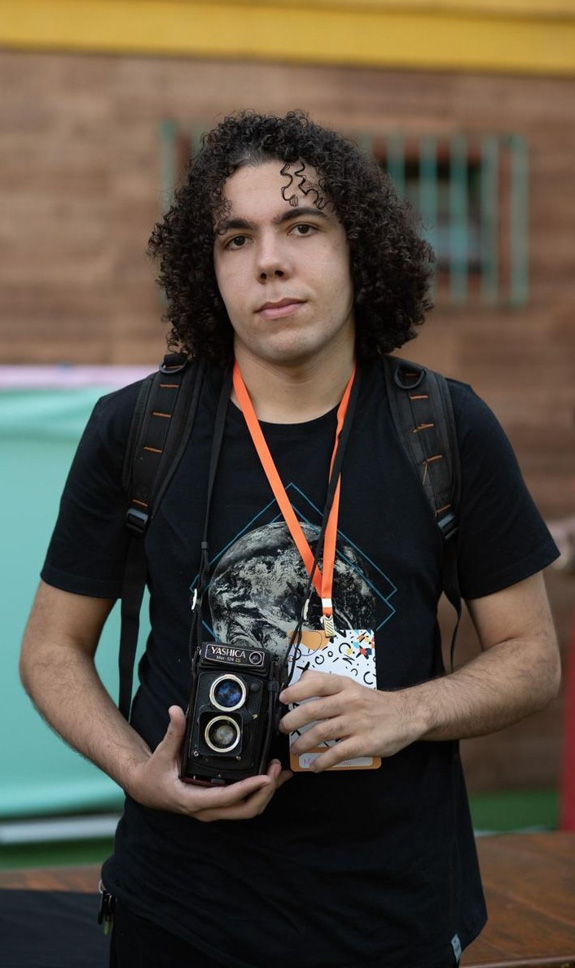

Me chamo Matheus, sou carioca e desde pequeno sou muito interessado na fotografia devido a minha mãe que também é fotógrafa. Ganhei minha primeira câmera aos 8 anos e desde então nunca mais parei de tirar fotos. Comecei a trabalhar profissionalmente com a fotografia em 2022, fotografando eventos como festas infantis, batizados, casamentos e outros. Em 2024 entrei como estagiário no projeto Comunicar na PUC-RIO e desde então venho cobrindo eventos acadêmicos e outros eventos importantes para a história da universidade.
